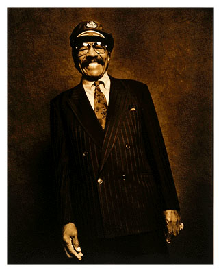

 18 сентября 1997 года ушел из жизни Джимми Уизерспун (Jimmy Witherspoon): один из классиков блюза, один из очевидцев и участников тех событий, что определили нынешнее положение жанра.Родившийся в 1923 в Арканзасе, Джими Уизерспун рос, слушая вместо колыбельных песен - госпелл, и сам с 5 лет начал петь в церковном хоре. Вокальные его способности были очевидны уже с ранних лет: ребенком он выиграл городской певческий детский конкурс. 12 лет бежал из дома, на протяжении 6 лет перепробовал самые разнообразные профессии, прежде чем в 18 лет он стал моряком торгового флота. Вторую мировую войну он служил на флоте. И его успехи во флотской самодеятельности дали ему возможность несколько раз выйти на сцену с достаточно известными джазовыми оркестрами и дебютировать в радиоэфире. А после демобилизации его выступление в небольшом калифорнийском клубе услышал руководитель популярного оркестра Джей МакШэннон - и пригласил заменить недавно ушедшего из оркестра - тоже весьма популярного - певца Уолтера Брауна. Так для Джимми Уизерспуна началась профессиональная карьера. Он должен был подражать Брауну, но очень скоро, и года не прошло, обрел полную увереность в своих сил, запел своим голосом, а два года спустя, в ноябре 1947, успешно начал сольную карьеру, выпустив пластинку с песней, которая будет несколько следующих десятилетий прочно ассоциироваться с его именем - Ain’t Nobody Business. Первой ее записала в 1922 Бесси Смит, но Уизерспун предложил достаточно самостоятельный вариант, в сопровождении оркестра МакШэннона. И песня заняла первый номер в рит-эндблюзовом хитпараде США. Было положено начало блестящей карьере. В 1958 записал первый альбом. Джимми Уизерспун выступал с успехом сольно и сотрудничал с ныне легендарными джазовыми титанами. По классификации его записи распололагаются на довольно зыбкой грани между джазом, популярной музыкой эпохи свинга и бигбэндов и собственно ритм-эндблюзом, эстрадным стилем, который процветал накануне пришествия рок-н-ролла. Разнообразие использованных стилей вовсе не делает собрание записей Джимми Уизерспуна эклектичным. Для него все это были разные оттенки блюза, которому он был предан полвека своей профессиональной карьеры: ”Блюз, Весь Блюз и Ничего Кроме Блюза” - как он назвал один свой этапный альбом. В начале 80-х заставила его выступать реже болезнь: у него был обнаружен рак горла. Но когда лечение радиацией дало положительный результат, он тут же вернулся на сцену. От роскошного баритона, которым он владел с подкупающей легкостью, не осталось и следа. Голос стал заметно севшим, но не петь Джимми Уизерспун не мог; и там, где не хватало голоса, он компенсировал искренностью чувства и идеальным ощущением блюза. В своем жанре это был мастер и классик - в истинном значении этих слов. Андрей Евдокимов. |
Гид по записям Джимми Уизерспуна на CD:
- Ранние записи удачно представляют альбомы:
JIMMY WITHERSPOON & JAY McSHANN (Black Lion)
BLOWIN’ IN FROM KANZAS CITY (Ace)
В первом почти половину номеров оркестр МакШэнна исполняет вообще без участия самого Уизерспуна. Второй записан с еще более знаменитым оркестром под управлением Джонни Отиса (Johnny Otis), и единственный его недостаток: нет ни одной из тех песен, что являлись фирменным блюдом Джонни Уизерспуна. Хитовую версию “Nobody’s Business” можно найти на во всех отношениях представительной компиляции “URBAN BLUES”, в серии “BLUES MASTERS” фирмы Rhino.
- Запись выступления Джимми Уизерспуна на джаз-фестивале Monterey (1959) первоначально вышла на LP фирмы HiFiJazz. На компакте, дополнив ее записями клубных выступлений, ее переиздала фирма Charly под названием ROCKIN’ WITH SPOON. Великолепное смешение боевого джаза с импровизирующим блюзом! А что за имена: Ben Webster и Coleman Hawkins, Roy Eldrige, Woody Herman, Earl Hines, Gerry Mulligan - в тот вечер у них Good Times Rolled, да еще как!
- Записи “чессовского” (вторая половина 50-х) периода собраны MCA/Chess в CD “SPOON SO EASY”. Мило, но с энергетикой вышел явный просад. Уизерспуна заставили заново перепеть несколько его предыдущих хитов, а такой трюк редко дает возможность повторить (что уж там превзойти!) первый результат. А вот когда Уизерспун поет новую, специально для него Уилли Диксоном написанную смешную песенку про то, что будет, если погаснет свет, - это действительно исполнено с вполне здоровым доброкачественным азартом. В этот же период для Чесс же Уизерспун записал великолепный вариант легендарной лихой песни “Kansas City” (авторы: знатные рокнролльщики Leiber и Stoller), но ее обидно не хватает на этом сборнике - жаль, она бы вытащила этот “сиди” с оценки “можно, годится” на оценку “обязательно!”.
Для белых рок-н-ролльщиков 60-х имя Уизерпусна было частью предыстории рок-н-ролла. Отдавая дань восхищения и уважения, в 1971г. Эрик Бердон (Eric Burdon, экс-Animals) записал с Джимми Уизерспуном альбом “черно-белого блюза” - “BLACK & WHITE BLUES” (ARG/BMG). На мой неэталонный вкус, лучшие треке на альбоме - это не те, что при участии “белого”. По-своему хороша версия блюзового стандарта Going Down Slow, записанная Уизерспуном в сопровождении The San Quentin Prison Band - ансамбля тюрьмы в Сэн-Квентин. (В этой тюряге вообще круто поставлено с культурной программой. В ней записано несколько замечательных блюзовых альбомов, один из них - БиБиКингом). Запись сделана на открытой площадке, и ветром порой микрофон “задувает” сверх всякой меры. Но теперь, по прошествии времени, - даже хорошо, звучит как “документ эпохи”. Еще замечательно звучит на заключительном треке хор преп.Джеймса Кливленда (The Reverend Cleveland Choir (тот самый, под чье ангельское неистовое пение Blues Brother Jake увидел свет). Но в целом альбом замечателен скорее как попытка втянуть голос Джимми Уизерспуна в блюз-рок, нежели просто замечателен.
“LOVE IS A FIVE LETTER WORD” (Capitol) - альбом, в свое время попал в список “горячих”, а заглавная песня побывала даже в хит-параде. С коммерческой точки зрения - единственный удачный альбом Уизерспуна с тех пор, как кончились 50-е... Это все, что я могу о нем сказать.
Сцена была истинным миром Джимми Уизерспуна. Студийные его записи порой можно упрекнуть в некоторой приглаженности и почти слащавости, но про концертники такого не скажешь. LP “LIVE” вышел в 1976 году на фирме LAX, на СD переиздан все той же славной фирмой Rhino. Здесь Джимми Уизерспун - в своей стихии, и чувствует себя великолепно - о чем и сообщает публике, которая, в свою очередь, тоже далеко не скучала. Блистательный джаз-блюзовый гитарист Robben Ford, тогда еще совсем молодой и зеленой, радует по-своему. В содружестве с Фордом Уизерспун записал и альбом, которому суждено остаться последним в его дискографии: “LIVE AT THE MINT”. Сиплый голос Джимми Уизерспуна ясно укажет человеку, знавшего его как обладателя бархатного баритона, что ничто не вечно под луной. И это - еще один повод для хорошо душевного блюза. Никогда бы не сказал, что это музыкальынй шедевр, но это музыка мне по сердцу.
THE BLUES, THE WHOLE BLUES, AND NOTHING BUT THE BLUES (Indigo) - последняя работа мастера в студии. По оценке Чарлза Ш.Мюррей: ”Классная коллекция соул-блюзовых баллад, с износившимся, но все еще звучным Спуном, выжимающим каждую каплю сока из некоторых хороших новых песен”.
Андрей Евдокимов.